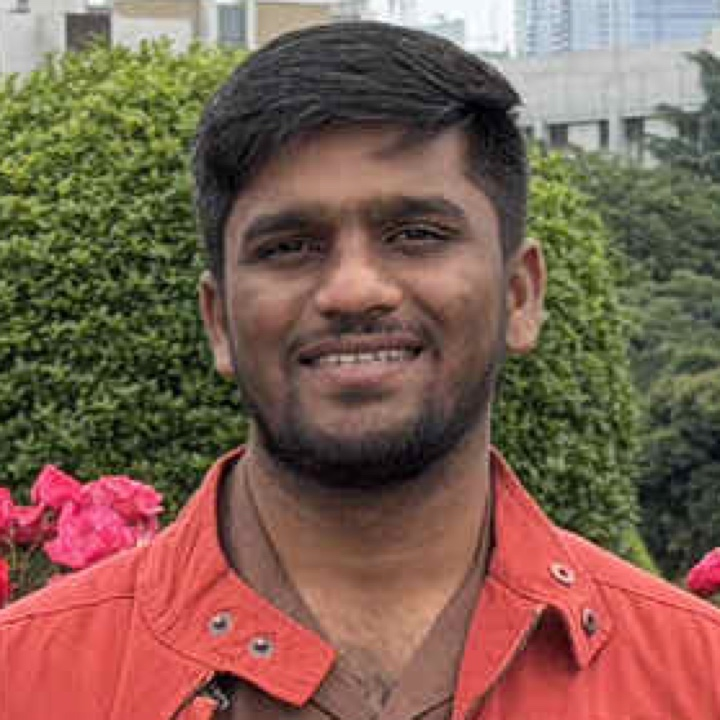

Global telemedicine without borders. Cross-border prescription safety and real-time multilingual voice, inside one consultation.
One AI layer over the consultation: it hears both languages, and it checks the medicine against the regulators that have actually acted on it.
A medicine that is routine in one country can be banned, restricted, recalled or simply unavailable in another. No doctor tracks every regulator in every country.
Symptoms, history, dosage, follow-up. Every one of them is a place where a translation app in a second window loses something that matters.
Not another video-call product. A layer that sits inside the consultation and does the two things a global consultation actually needs.
Before the prescription is finalised, the drug is checked against the regulators that have actually acted on it — WHO falsified-medicine alerts, national bans, recalls with the country attached.
Each side speaks their own language. The other hears theirs, spoken aloud. And the doctor gets a live clinical note built from the conversation, not a transcript to re-read.
Safer prescriptions, and a conversation both people understand.
Named in a WHO falsified alert, banned or withdrawn by a national regulator, or a documented serious interaction with another drug on the same prescription.
Restricted abroad but legal locally, a recall on record, or no national label found at all — reported as a finding, never as silence.
Nothing found across every source, and the answer says which sources it read and counted. A verdict with no citation is rejected before it renders.
Regulators covered live today: WHO, EMA, FDA, MHRA, Health Canada, TGA, CDSCO. None of this is in a model’s weights — it is read at the moment the doctor asks.
Not in a report afterwards. While the doctor still has the patient, and can still change the plan.
The final prescription decision always stays with the doctor. The system surfaces evidence; it does not overrule.
Withdrawn or restricted for this use by multiple national regulators; hepatotoxicity. Still routinely prescribed in some markets, which is exactly the gap a cross-border consultation falls into.
A drug being normal where the doctor sits says nothing about where the patient is.
Including code-mixed speech, the ordinary way people actually talk — an English drug name inside a Nepali or Hindi sentence. Measured 0.947 confidence live.
Translated and spoken with a voice chosen per language, then answered back the same way. Indic to Indic goes direct, in one hop — no English pivot, which is faster and the better translation.
Every turn, the whole conversation is re-read into a live note: chief complaint, duration, what the patient denied, red flags, and the next questions to ask.
23 languages, all of them Indian-subcontinent and English — which is precisely the India–Nepal, India–Bangladesh, India–Sri Lanka and Gulf-diaspora telemedicine corridor.
POST /api/consult // every turn, both directions
→ { translated, audioBase64,
note: { complaint, duration, negatives, redFlags, suggestions, askBack },
flagged[], // suggestions re-checked against the WHO alert index
timings }
POST /api/prescription // before the Rx is finalised
→ { verdict: "stop"|"caution"|"ok", headline, findings[], sources[], degraded[] }
Evidence legs run in parallel and each has its own failure lane. A dead leg is named in degraded[] and forces the answer to amber — an unchecked answer is never shown as a safe one, and is never cached.
saaras:v3 codemix speech to textsarvam-105b-conversations reasoningsarvam-translate:v1 indic to indic directbulbul:v3 voice, per-language speakerVideo and booking are solved. What no platform carries is where the patient is, what language they think in, and whether this medicine is safe there. That is the layer we added.
No manual research into foreign drug regulations mid-consultation. The alert arrives while the patient is still there, ranked by what is clinically most serious.
They are understood in their own language, and they are not handed a prescription they cannot legally or practically fill where they live.
One integration turns a domestic teleconsult product into one that can cross a border without taking on the regulatory blind spot by hand.
Translation tools exist. Drug databases exist. Neither is inside the consultation, and a doctor will not leave a live call to use either.
Said plainly because a demo that hides its edges has not been driven near them.
Healthcare should not stop at a border.
Connecting doctors globally. Protecting patients locally.

Sarvam AI for communication. Anakin.io for country-aware intelligence. Thank you.